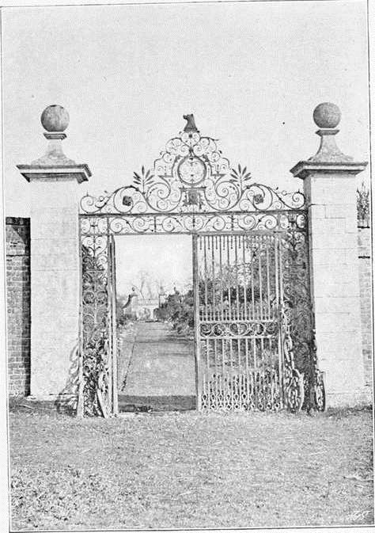

Seventeenth Century. Part 3
Description
This section is from the book "A History Of Gardening In England", by Alicia Amherst. Also available from Amazon: A History Of Gardening In England.
Seventeenth Century. Part 3
The ruthless hand of man has done more to destroy the old gardens of England than the changes of time and seasons. But some vestiges of the gardens of each period still remain to us. Although no "princely" gardens were being laid out during the middle of the seventeenth century, like those of its latter end, many an old manor-house garden may date from about this time. This is not a history of " Gardens," so it is impossible to give anything like a complete list of the beautiful old gardens that are still to be found throughout the length and breadth of England. I must content myself by mentioning a few typical examples, to serve as illustrations of the fashions and plans of each successive century. The garden of Chilham Castle, in Kent, with its terraces, bowling-green, and clipped trees, was laid out in 1631. That of Bilton, in Warwickshire, with its fine holly and yew hedges, was begun in 1623. Bulwick, in Northamptonshire, with terraced slopes, pond, and fine wrought-iron gates, was being laid out at the same time, and finished in 1674. And at Mitford, in Northumberland, although the Manor House (dated 1637) itself is in ruins, the old wall of the garden still encloses a tangle of roses, sweet herbs, and old apple-trees, and a sun-dial, which for 250 years has faithfully marked the hours as they fly. Instances such as these could be found in every county in England. Household accounts give us a few glimpses into the management of such gardens. In the interesting series at Hunstanton, of the Le Strange Household books, such items as the following occur :—
* A good treatise on fruit in MS., probably written by Joshua Chandler about 1651, is entirely founded on Austen, and parts of it are transcribed from Austen's work, with the omission of his references to Scripture.
The MS. is in the possession of Miss Willmott.
BULWICK.
" 1628 Nov. 6, for a Bagg to Bring the fruit home in 1s. To a man for digging of flaggs for the Bowling ground 4s. For 65 foote of Oake Bord for the gardin doores 7s.
1629 Paid for dikinging and Hedging of Heacham orchvard, 2 men for 7 daves a peice 7d. in clearing the garden and digging of it 11s. 8d.
1630 6 wheel Barrowes £1, for a crest for the gardin house end at 2s. 8d. £1. 18s., and for crest for the moate wall 16d. £12. 2s. 5d. and for the gardin entry doorstall 3od. and for crest over that door.
Oct. 16, 1631 for a gardin spade 3s.
1632 To the gardiner for a quarter's wages wanting 2 weekes £2. 1635 For 2 greate gardin basketts 4s.
1637 Pumpes and Pipes for the garden £2. 4s. To a gardener of Creake for slips and seeds, 2s".
What greatly adds to the interest of the Accounts of Hunstanton, is that the part of the garden there referred to within the moat, has been but little altered since that date. The bowling-green is still there, and a square plot of garden with thick low hedges, in front of the house, is hardly changed. The note book of Henry Oxenden, of Barham, Kent, between the years 1638 and 166S,* contains many interesting gardening entries : —
" Feb. 11, 1635 set the hawksbill pares in the garden in Maydeken. " 1635 planted the cherry garden at great Maydeken.
" Feb. 14, 1652 gave Mr. Barling 4 apple trees and a peare tree, viz. a musk pare tree.
" Feb. 10, 1652 sent my Coz Henry Oxinden the yew tree . . . lent him then my stone rowle.
" Nov. 16, 1647 planted twentie-five peare trees in the garden that is walled about at Great Maydeken witness my sonne Thomas and my sonne Hobart.
" Nov. 1654 tooke up out of the Nursery at Maydeken 1 quince tree, 2 warden trees and 3 other peare trees, and set ym in Byton, and 1 pear tree against the bake house windore, I allso sete one medlar tree and a nutmeg peach tree in the garden.
" Fb. 19, 1655 grafted one of the best pares Capt. Meriwether hath uppon a tree beside the house at South Barham ; made a crosse upon it: it is to be eaten in Feb.
* The Genealogist, July and October, 1891—January, 1892.
" 1639, hcc (Sir Basil Dexivell at Boome) planted his orchard agt. his back dore agt. the Hall.
" Feb. 7, 1647 Lieutenant Hobday planted 10 apple trees, in his orchard next his garden, which I gave him.
" 1665 Ms. Adie, Relict of Ed. Ady, new coped the wall round about the gardens and the Greene Court".
The note book of Sir Thomas Hanmer* about this date, contains some memoranda about the fruit trees in his garden at Bettisfield :—
Hunstanton.
" Against the South wall are one Apricocke from Mr. Rea,† three Apricockes from London, one peache from a French stone, raised at Bettisfield 1660, and two red-heart cherries from Trevallyn. In the corner next to the turf walk one pear from Bowen, I think a bergamot. Against the West wall there, from the south wall to the door, all plums from Colonel Jeffreyes, except one double-flowered cherry, and one morocco plum next the door ; on the other side the door, first a bullen plum, then a Turkey plum, then a king plum, then a Catalonia plum, and a Duke cherry, a cornelian. Against the North Wall these plums from Trevallyn, viz. the Apricocke plum and the orange, and one plum from Colonel Jeffreyes. Against the East Wall in the great garden, may cherries, a carnation cherry, about the middle of the wall, a duke cherry at the end, close by the North Wall, a cornelian cherry from Rea marbled, and a turkey plum from Rea ... In the little court . . . are three peaches from Mr. Bate, viz. a Morills ... a Newington . . . then a Persian peach. . . . Against the East Wall of the little garden, beginning from the South Wall, first three peaches raised 1660 at Bettisfield, from French stones, then a peach de Pau, then a Savoy peach".
* A memorial of the Parish and Family of Hanmer in Flintshire, by John, Lord Hanmer—Privately printed. 1877. † Author of Flora, Ceres and Pomona.
Continue to: